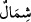

ise, bir yönü ile yüz, diğer bir yönü ile de enseden ibâret olan amel defterleri
sağlarından verilen sağ taraf ehline işârettir. Bunların nurları önlerinde olmakla
kayıtlıdır. Ama amel defterleri sollarından verilecek olan sol taraf ehlinin asla ışığı
yoktur. Çünkü onlar inkârcı yalancılardır. Bu sebeple sol anlamındaki
/şimâl
kelimesi gizli zikredilmiştir.
İbn Mes‘ûd’dan (r.a.) nakledilmiştir ki herkesin nuru, kendi ameli kadar olur.
Birisinin nûru San‘a’dan Aden’e kadardır, öyle nur vardır ki sâhibi ancak o nurla
ayağının ucunu görebilir. Allah Teâlâ hiçbir mü’mini nursuz bırakmamıştır.
İbni Mes’ûd (r.a.) demiştir ki; Onlardan nuru hurma büyüklüğünde verilecek olanlar
var. Bir kısmının nuru ise ayakta duran adam büyüklüğünde verilir. Onlardan nuru en az
olanlarına, iki ayağının başparmağı kadar nur verilir. Bu nur bir söner bir yanar. Onlar
cennete götürüldüklerinde sırattan geçerken nurları bir yanlarından bir de önlerinden
aydınlatır. Sırattan geçişleri nurları nisbetindedir. Bir kısımları göz açıp kapayıncaya
kadar geçer, bir kısmı yıldırım gibi geçer, bir kısmı bulut gibi geçer, bir kısmı yıldız
kayması gibi kayıp geçer. Bir kısmı bir at bağlayacak kadar bir zaman içinde geçer. İki
ayağının başparmağı kadar nur verilen ise, ayağı üzerinde emekleyerek yüzükoyun bir
durur bir yürür. Geçerken uzuvlarına cehennem ateşi dokunur. Kurtuluncaya kadar böyle
yürümeğe devam eder.
Kıyâmet gününde önlerinden ve sağlarından aydınlatan nurları olduğu gibi, bugün de
kalplerinde bir nur olup onunla bütün her hallerinde doğruyu bulurlar. Bu nur onların dış
yüzlerinde görünür bunun üzerine onun işleri kolaylaşır, ona boyun eğer ve Allah’ın
yakınlarından olur. Kalbinin nuru olmayana ise her şey zor gelir, teslimiyet sâhibi olmaz
ve inkârcılardan oluverir. Abdullah b. selâm, Peygamberimiz (s.a.)’i görür görmez
hemen îman ederek, Bu yüz yalancı olamaz dedi.[261] Onun benzerleri de öyle îman
ettiler. Ebû Cehil ve adamları ise tam tersidir.
Bazı büyükler demişlerdir ki, sağlarındaki nur, seyr u sülûk ile Allah’ın rızâsına
ulaşmak için çalışma ve gayretlerinin sürekliliğinden kinâyedir. Bunun sebebi de
insanın kuvvetinin daha çok sağ elinde olmasındadır. Sağ soldan bu yolla ayırd edilir.
“(Onlara): ‘Bu gün müjdeniz, zemininden ırmaklar akan ve içlerinde ebedi
kalacağınız cennetlerdir’, denilir.” Yâni onlarla karşılaşan melekler, “Müjde” yâni
“bugün müjdeleneceğiniz şey cennetlerdir”, veya “müjdeniz cennetlere girmenizdir”
derler. Burada îrâb bakımından muzâf hazfedilerek muzâfun ileyh onun yerine ikame
edilmiştir. “Zemininden ırmaklar akan ve içlerinde ebedi kalacağınız… Nurdan ve
içinde ebedî kalacakları cennetlerden zikredilenler “…büyük kurtuluştur.” İstedikleri
bütün zaferlere ulaştıkları için bu kurtuluştan öte bir amaç yoktur.
Kâşifî şöyle demiştir: “Kıyâmet korkularından emin olmak ne büyük bir kurtuluştur!
Bu kimseler, Celâl yurduna ulaşır, Melik-i Müteâl Hazretleri’nin dîdârını görürler.
Mısra:
Mukaddes binlerce cân